This chapter gives an introduction of composition element used for generating artifacts like Microsoft Word, Microsoft Excel, Microsoft PowerPoint, Code. It shows how user defines, registers, and distributes his own template by example.
StatUML Generator Template consists of two area. one is style area that defines document form style and the other is command area defining which model element the generator get from UML model. To represent command in command area, MS Office templates(Word, Excel, PowerPoint) use MS Office's comment and code template uses text surrounded with special characters. Command area contains commands like iteration, comparison, evaluation, drawing for UML model. Commands of each template command are different slightly but common commands like the followings are used.
REPEAT is command that iterates model satisfying arguments. Repeating style existing between REPEAT and ENDREPEAT command, generator writes the style to generated document at each time. REPEAT command has the following four arguments.
| Argument | Description | Remarks |
|---|---|---|
| Pathname |
Repeats the elements existing below Pathname. |
Optional |
| FilterType |
Repeats the element whose type is FilterType. |
Optional |
| CollectionName |
Repeats elements in collections named by CollectionName of elements that are selected by Pathname and FilterType. |
Optional |
| Condition |
Repeats elements that satisfy Condition. |
Optional |
The first argument "Pathname" specifies the starting point of UML model repetition. It is in the form of path name separated by "::" string. The element's pathname is shown in status bar. There are two sort of Pathname (absolute and relative). Absolute pathname starts with "::". For example, "::A" means element named "B" under top of project, "A" means element named "A" under current element. Also "{R}" string can be appear in front of pathname string. "{R}" string means that it iterates recursively all the elements existing in all the sub path under pathname. If pathname is omitted, it repeats element under last path selected by command.
The second argument "FilterType" means repeat element type. If argument value is "UMLClass", it iterates only elements whose type is "UMLClass". If argument is omitted, it iterates all element regardless of type.
The third argument "CollectionName" means that it iterates elements in selected element's collection named by CollectionName. For example, first argument is "::A", second argument is "UMLClass", and third argument is "OwnedElements", it means that it iterates elements in "OwnedElements" collection of typed "UMLClass" elements existing under "::A" path.
The fourth argument "Condition" means condition for repeat element to satisfy. If argument value is "current().StereotypeName == 'boundary'", it iterates elements that selected element's stereotype is "boundary". The argument default value is true. If the argument is omitted, it do repetition for all element regardless of condition.
In case of satisfying argument condition, IF command displays styles existing between IF and ENDIF commands. IF command has the following arguments. The argument value is expressed in JScript.
| Argument | Description | Remarks |
|---|---|---|
| Condition |
condition to be satisfying |
Mandatory |
DISPLAY command print value of model element. DISPLAY command has the following arguments.
| Argument | Description | Remarks |
|---|---|---|
| Pathname |
Path of element to select |
Optional |
| Expression |
Expression for value to be written |
Optional |
The first argument is the pathname that the second argument refers. The pathname is expressed in the form of absolute and relative path. If pathname is omitted, current path is the last path selected by previous command.
The second argument is expression for value to be written. If first argument is "::A" and second argument is "current().Documentation", it selects element named "A" under top project and writes the element's property value named "Documentation".
Use SCRIPT command to express something except common commands. The argument is composed of JScript statements. SCRIPT command's argument unlike the other argument expression has several expression(statements).
The followings are available Built-In functions in command.
| Signature | Description | Target template |
|---|---|---|
| StarUMLApp(): IStarUMLApplication |
Returns StarUML Application COM object. |
WORD,EXCEL, POWERPOINT |
| StarUMLProject(): IUMLProject |
Returns COM object on top of project of StarUML Application. |
TEXT |
| MSWord(): WordApplication |
Returns Word Application COM object. |
WORD |
| MSExcel(): ExcelApplication |
Returns Excel Application COM object. |
EXCEL |
| MSPPT(): PowerpointApplication |
Returns Powerpoint Application COM object. |
POWERPOINT |
| findByFullpath(Path): IElement |
Returns element existing at argument path. |
WORD,EXCEL, POWERPOINT,TEXT |
| findByLocalpath(RootElem, Path): IElement |
Returns element existing at relative path on RootElem. |
WORD,EXCEL, POWERPOINT,TEXT |
| itemCount(RootElem, CollectionName): int |
Returns count of elements in collection named as CollectionName. |
WORD,EXCEL, POWERPOINT,TEXT |
| item(RootElem, CollectionName, Index): IElement |
Returns element existing at index in collection named as ColletionName. |
WORD,EXCEL, POWERPOINT,TEXT |
| attr(Elem, AttrName): Value |
Returns attribute or reference value named as AttrName of Elem element. |
WORD,EXCEL, POWERPOINT,TEXT |
| current(): IElement |
Returns the last selected element. |
WORD,EXCEL, POWERPOINT,TEXT |
| pos(): int |
Returns the index of current element in container element. |
WORD,EXCEL, POWERPOINT |
| createFile(path): TextStream |
Creates file at argument path and returns file object. |
TEXT |
| deleteFile(path) |
Deletes file existing at argument path. |
TEXT |
| createFolder(path): Folder |
Creates folder at argument path and returns folder object. |
TEXT |
| deleteFolder (path) |
Deletes folder existing at argument path. |
TEXT |
| fileExists(path): Boolean |
Return whether file exists at argument path. |
TEXT |
| folderExists(path): Boolean |
Return whether folder exists at argument path. |
TEXT |
| fileBegin(path) |
Creates file at argument path and all the outputs by commands will be printed to the file while fileEnd is not called. |
TEXT |
| fileEnd(path) |
Corresponds to fileBegin function and stops printing to file assigned by fileBegin. |
TEXT |
| getTarget(path): String |
Returns configured output path on StarUML Generator UI by user. |
TEXT |
Before writing text template, the following steps should be executed.
The commands described in "Element composing template" paragraphs are represented differently in each template. The command in text template is surrounded by "<@" and "@>". Command name appears next to "<@", first argument appears after one space character, the other arguments separated by ";" appear. Texts existing out of "<@" and "@>" are treated as style, and they are printed to generated document the way they are.
To iterate "UMLClass" typed element existing in all sub path under "::Design Model" path, do as following.
<@REPEAT {R}::Design Model;UMLClass;;@>
...
<@ENDREPEAT@>
You want to print java class definition from model information. Between REPEAT and ENDREPEAT command, place text like "class", "{", "}" for java style and DISPLAY command for class name, documentation as following.
<@REPEAT {R}::Design Model;UMLClass;;@>
class <@DISPLAY ;current().Name@> {
// <@DISPLAY ;current().Documentation@>
}
<@ENDREPEAT@>
In text template, there is shortcut-command similar to DISPLAY command but it hasn't path argument. It is in the form of "<@=expression@>" and uses only second argument of DISPLAY command. If above template is expressed in term of "<@= .. @>", it is like following.
<@REPEAT {R}::Design Model;UMLClass;;@>
class <@=current().Name@> {
// <@=current().Documentation@>
}
<@ENDREPEAT@>
Take advantage of IF and ENDIF commands and you can print something selectively. In the following case, class documentation is shown if any.
<@REPEAT {R}::Design Model;UMLClass;;@>
class <@DISPLAY ;current().Name@> {
<@IF current().Documentation != ""@>
// <@DISPLAY ;current().Documentation@>
<@ENDIF@>
}
<@ENDREPEAT@>
Expression used as command argument is expressed in JScript. At this time, Built-In function can be used. If you want to use other function except built-in functions, define new function on SCRIPT command and call new function at other command argument. The following example defines myfunc function and displays the returned value after calling myfunc function.
<@SCRIPT
function myfunc(a, b) {
...
}
@>
<@DISPLAY ;myfunc(1, 2)@>
SCRIPT command can be used in other cases. The following shows other example of SCRIPT command, it stores each class to file named by self-name.
<@REPEAT {R}::Design Model;UMLClass;;@>
<@SCRIPT fileBegin(getTarget()+"\\"+current().Name+".java"); @>
class <@DISPLAY ;current().Name@> {
// <@DISPLAY ;current().Documentation@>
}
<@SCRIPT fileEnd(); @>
<@ENDREPEAT@>
If editing template is done for all the commands and document is stored, you can generate codes utilizing your own text template. Refer to "Generating by template" chapter for the detailed steps.
Before writing WORD template, the following steps should be executed.
In WORD template, command area is expressed in WORD's comment. Command name is specified at comment author property and arguments are specified at comment text. Argument separator is ";" character. all areas but comment areas are regarded as style area and they are printed to generated document the way they are.
To iterate "UMLClass" typed element existing in all sub path under "::Design Model" path, copy [REPEAT] and [ENDREPEAT] comment, paste them. Select [REPEAT] comment and click WORD's comment inspect button to set REPEAT command argument. Inspector Window appears, input [REPEAT] comment's property as following.
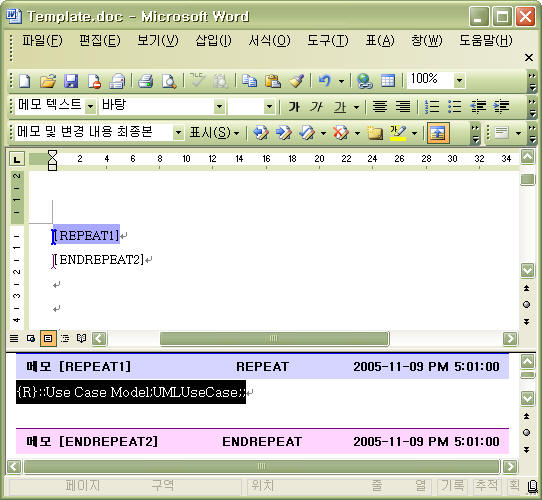
Copy [DISPLAY] comment and paste it between [REPEAT] and [ENDREPEAT] comment, fill argument value in comment text like the following. Repeating all usecases under "::Use case Model", it prints its name and documentation.
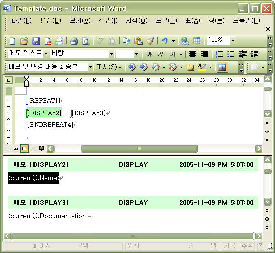
To do something in the only case of satisfying special condition, make [IF] and [ENDIF] comment as following.
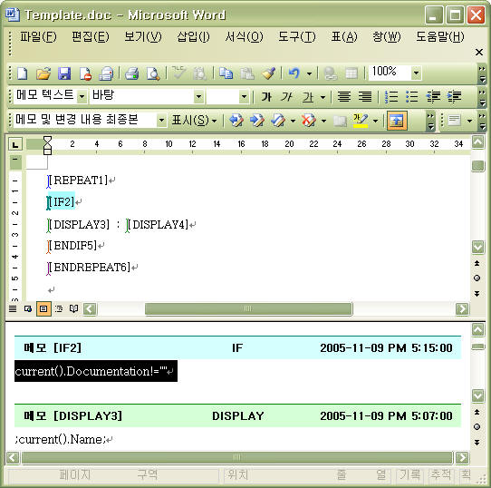
The combination of [REPEAT] and [IF] comment is replaceable by one [REPEAT] comment. Move [IF] command's condition argument to [REPEAT] command's one and delete [IF] and [ENDIF] commands. It does equal the action.
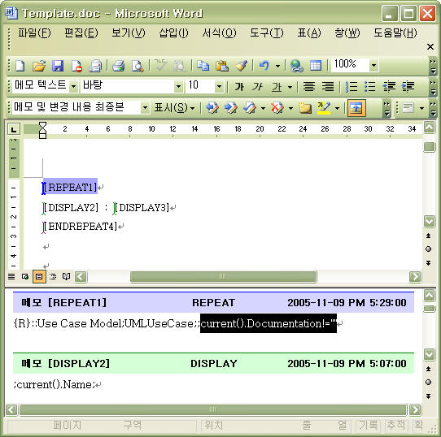
Like other templates, WORD template can execute JScript statements with SCRIPT command. If you want to print result value evaluated by JScript, fill JScript statements that has variable assignment statement into [SCRIPT] comment's text and place variable in [DISPLAY] command's argument.
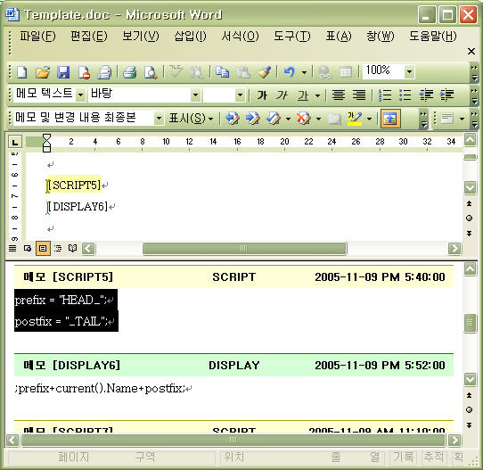
In WORD template, You can iterate special row of table. To do this, use [REPEAT] and [ENDREPTR] command. The arguments are same in the case of [REPEAT] and [ENDREPEAT]. But [REPEAT] comment should be placed in the first cell of row and [ENDREPTR] comment should be placed in the last cell of row. The following is example that generates table with Usecase's name and documentation.
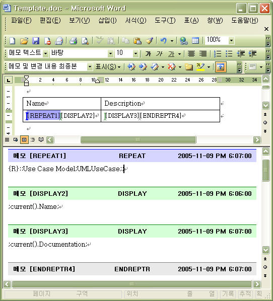
If WORD template editing is done, store the template document. Then you can generate word document from your own WORD template. Refer to "Generating by template" chapter for the detailed steps.
Before writing EXCEL template, the following steps should be executed.
In EXCEL template, command area is expressed in EXCEL's comment. Command name and arguments are specified at comment text property. Comment text is composed of command name and arguments sequentially. Name and arguments in comment text is separated by ";" character. all areas but comment areas are regarded as style area and they are printed to generated document the way they are.
EXCEL template can analyze and assess model information by utilizing EXCEL's feature (statistics, chart). This paragraph shows how to extract numerical value related to class from model and make a graph of it.
To make data for statistics, you need to iterate all the classes in the model by using REPEAT command. Place REPEAT and ENDREPEAT command at the start and end cells of target row.

And insert DISPLAY commands that print class name, the number of attributes, the number of operations, the number of associations, between REPEAT and ENDREPEAT commands as following.
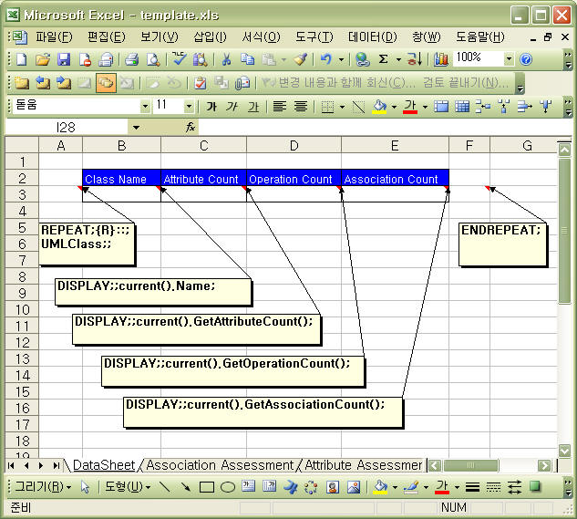
To make a graph of information for classes, insert EXCEL chart here and select attribute, operation, and association count as source data.
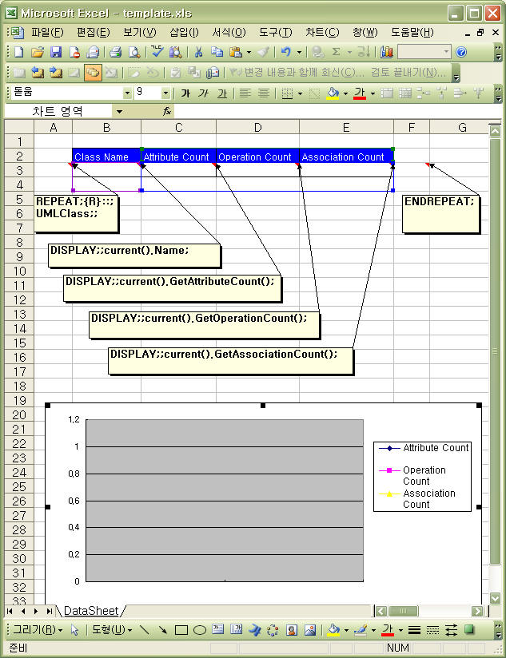
If EXCEL template editing is done, store the template document. Then you can generate EXCEL document from your own EXCEL template. Refer to "Generating by template" chapter for the detailed steps. The following is result generated automatically from model information.
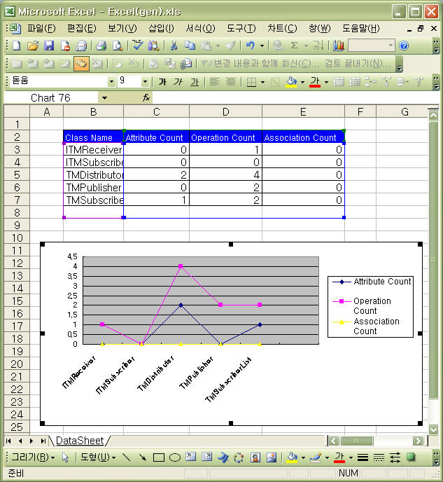
Before writing POWERPOINT template, the following steps should be executed.
In POWERPOINT template, command area is expressed in POWERPOINT's comment. Command name is surrounded by "<<" and ">>" at the first line of comment text and arguments are specified at the second line of comment text. The separator among the arguments is ";" character. all areas but comment areas are regarded as style area and they are printed to generated document the way they are.
For example, let me introduce how to write POWERPOINT template that generates slides consisting of diagrams and documentations of diagrams. First of all to place a diagram in a slide, insert comment at left-top corner of slide and set comment text as following. At this time you must not insert ENDREPEAT comment. The reason will be explained later.
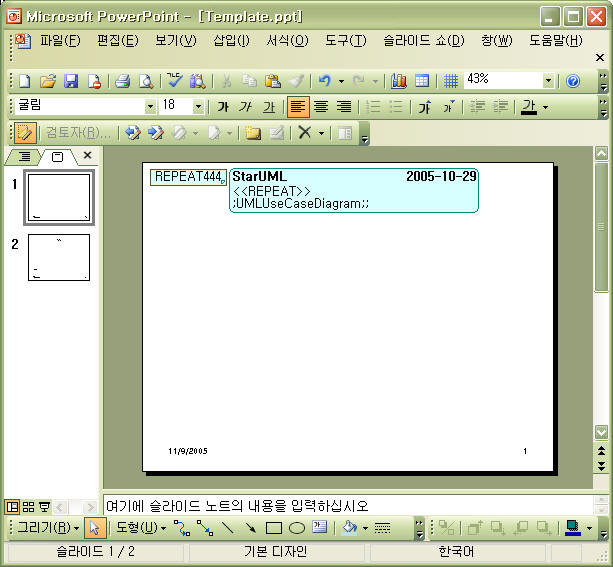
Next, To print diagram name as slide title, insert textbox and DISPLAY-TEXT comment, and input text as following. And insert "$$" string into textbox for DISPLAY-TEXT command to know where to print text. DISPLAY-... command prints for the only time when text or image box contain boundary of the command exactly. Therefore you must place DISPLAY command in boundary of text or image box.
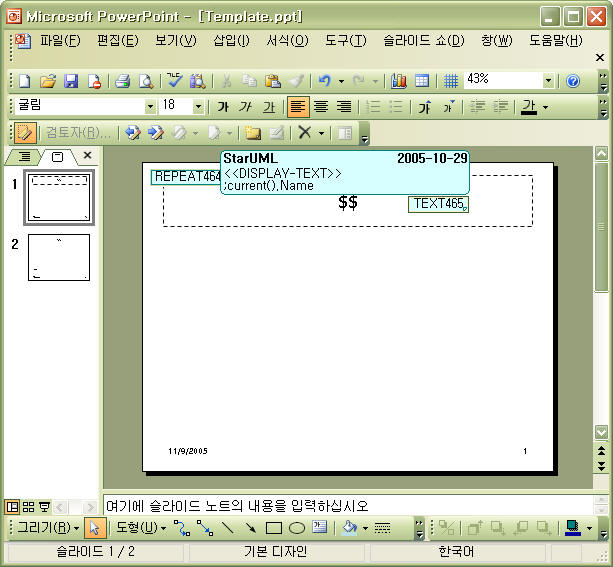
To draw diagram in the middle of slide, insert textbox and resize it. Also insert DISPLAY-IMAGE command, place it in the textbox, and input text as following.
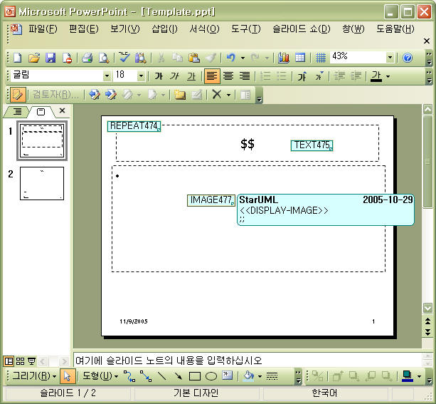
To print diagram documentation at the bottom of slide, insert DISPLAY-TEXT command and textbox, set comment text as following.
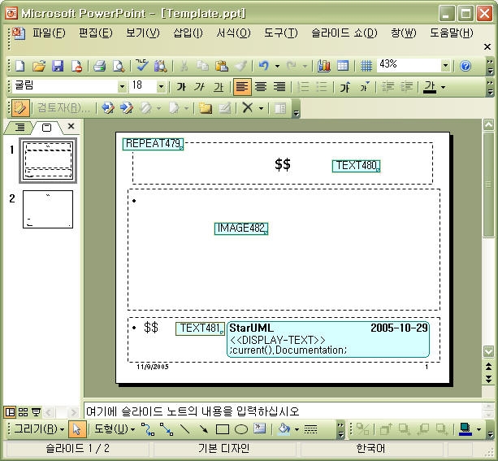
Last of all to mark boundary of repetition, insert ENDREPEAT command at the bottom of slide. The reason inserting ENDREPAT last of all is that in POWERPOINT template generator's interpretation order is not depend on position of comment but creation order of comment. Command is not executed because it is higher position than other but executed because it creation is prior to other. If you insert REPEAT, ENDREPEAT, DISPLAY-TEXT in order, generator interprets there exists no command between REPEAT and ENDREPEAT. To repeat other commands by REPEAT command, you must create REPEAT command, target ones of repetition, and ENDREPEAT one in order.
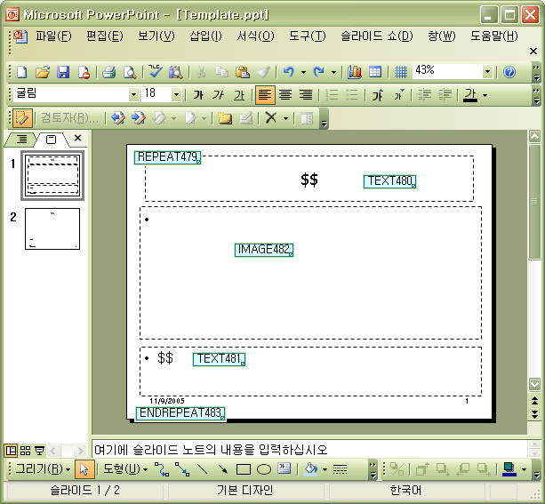
If POWERPOINT template editing is done, store the template document. Then you can generate powerpoint document from your own POWERPOINT template. Refer to "Generating by template" chapter for the detailed steps.
User can register his own template document to generator.
Set information for template name, group, category, and description.
| Item | Description |
|---|---|
| Template Name |
Specifies target template name. |
| Group |
Specifies group containing target template. |
| Category |
Specifies template category under group. |
| Description |
Specifies description for template. |
Set detail information for template.
| Item | Description | ||||||||||||||||
|---|---|---|---|---|---|---|---|---|---|---|---|---|---|---|---|---|---|
| Document Type |
Specifies type of document. Select one of DOCUMENT, REPORT, CODE. |
||||||||||||||||
| Format |
Specifies result document format. |
||||||||||||||||
| Version |
Specifies version information of template. |
||||||||||||||||
| Related Profile |
Specifies profile related to template. |
||||||||||||||||
| Related Approach |
Specifies approach related to template. |
||||||||||||||||
| Translator Type |
Specifies type of generator. One of the followings is available.
|
||||||||||||||||
| Translator |
Specifies generator file name. It is available for user-defined generator. |
||||||||||||||||
| Example |
Specifies sample model file name that template applies to. |
||||||||||||||||
| Parameters |
Specifies required parameters. |
||||||||||||||||
| Related files |
Specifies related files for generation. |
Set parameters for each translator type as following.
| Item | Type | Translator type | Description |
|---|---|---|---|
| TemplateFile | FILENAME or STRING |
WORD,EXCEL, POWERPOINT |
Specifies template document file name. |
| OutputFile | FILENAME or STRING |
WORD,EXCEL, POWERPOINT, TEXT |
Specifies result document file name. |
| Keep Comment | BOOLEAN |
WORD,EXCEL, POWERPOINT |
Specifies whether result document contains command information. |
| ShowGenerationProcess | BOOLEAN |
WORD,EXCEL, POWERPOINT |
Specifies whether it shows progress on MS Office. If the value is set to true, generation performance may be slowed. |
| Normal Generation | BOOLEAN | WORD |
Specifies starting target path for generation. If it is set to false, the starting element for generation is selected element on the StarUML. |
| Generate Index | BOOLEAN | WORD |
Specifies whether indices is generated. |
| intermediate | STRING | TEXT |
Specifies whether intermediate files for generation are generated. |
| target | STRING | TEXT |
Specifies folder path that contains generated code files. |
|
Name |
Description |
|---|---|
| $PATH$ |
means folder path which template and template description file exist in. |
| $GROUP$ |
means value of group property of template. |
| $CATEGORY$ |
means value of category property of template. |
| $NAME$ |
means template name |
| $TARGET$ |
means folder path that user select on [Generator] dialog. |
About managing registered template, refer to "Generating by Template" paragraph in User Guide "Chapter7. Generating Codes and Templates".
Template is installed under "staruml-generator" folder. All the templates and batch tasks exist in "templates" folder under "staruml-generator" folder. Generally All the resource files related to one template exist in one folder. The folder must be right under "templates" folder. A template is composed of template description file (*.tdf) and template document (*.doc, *.ppt, *.xls, *.cot, etc.). The template description file contains the configurations at user guide "chatpter7.Generating Codes and Documents > Registering template". Batch task is described to batch task file. Batch task file is with ".btf" in "batches" folder under "staruml-generator" folder. The following is the summary of file extensions.
|
File extension name |
description |
|---|---|
| BTF |
contains batch task list, parameters for each task. |
| TDF |
contains template information (name, type, template file name, parameters, etc.) |
| DOC, DOT |
contains commands and style information for word template |
| XLS, XLT |
contains commands and style information for excel template |
| PPT, POT |
contains commands and style information for powerpoint template |
| COT |
contains commands and style information for code template |
The folder structure for generator is composed as following.
staruml-generator\
templates\
template1\
template1.tdf
template1.doc
template2\
...
batches\
batch1.btf
...
To install template is very simple. Copy folder (under "staruml-generator\templates" folder) that contains template to be distributed, and paste it under "staruml-generator\templates" folder in target computer. Then the installation is complete.
To remove template is also very simple. Remove the folder that has the template you want to remove.
Folder structure is available under "staruml-generator\templates" folder. Therefore you can arrange templates without changing batch list and template information. It makes you easy to manage and distribute templates. For example, you can collect several template folders under one folder, compress them into a archive file like zip, and distribute it to some computer. What the receiver should do to install is only to extract the file under "staruml-generator\templates" folder. Installing and removing batch task)
To install batch task is very simple. Before installing batch, install templates used in batch task. Next, copy batch task file(*.btf) under "staruml-generator\batches" folder and paste it under "staruml-generator\batches" folder in target computer. Then the installation is complete.
To remove batch task is also very simple. Remove the batch task file(*.btf) you want to remove.